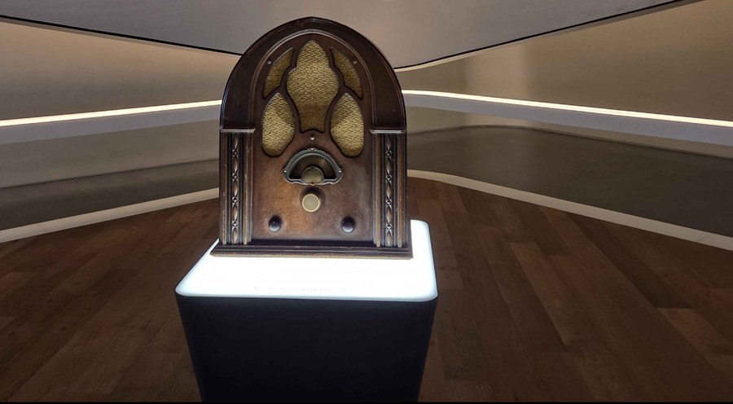

So I was coming to Korea for the first time for a study abroad program, to take one of my classes and have fun exploring everything the country has to offer. Some of the places I visited were DDP and the National Museum. Sadly though, I couldn't book a visit to HamHamPangPang, a café owned by Project Moon, a game company that I love.
On the first day in Korea, we went to the National Museum where we explored the exhibitions and learned about the country's rich history. It was fascinating to see how much history Korea has and how well it has been preserved. One of the more surprising things we learned was how Greek and Islamic cultures had an influence on Korea, even though they were halfway across the known world at the time. For the other days we went to Museums along with the DDP which is near the biggest Shopping district in Seoul.
For days 6 to 10, We saw some other museums like the Samsung Museum but we also went to the DMZ, also known as the Demilitarized Zone. Where we could see the other side of korea and some of the Tunnels that were dug to try to get to Seoul And reclaim the southern parts of korea.
